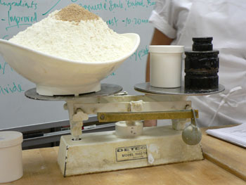
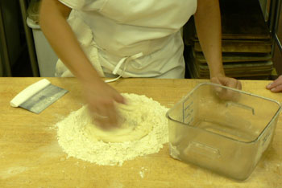
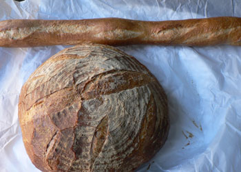

First bread class
On Saturday from 9:30 to 4, I enjoyed my first of five artisanal bread classes. I enrolled in the class at the last minute, and I spent the last few days getting my uniform and paperwork together. I have no baking experience to speak of except a mini class I took a few months ago and a year spent baking bagels at Einstein Bros. in the mid-nineties.
Bread bakers have a reputation for being the most generous and friendly of all culinary artisans. They pretend that bread is simple, but every step of the way you can see that it’s not. It’s true that a baguette has just four ingredients, but it can take a lifetime to master mixing them correctly in the right proportions. It’s equally scientific and artistic, and it’s physically demanding.

Our teacher swears by these crazy old scales, which she says are indestructible. One of our most important and complicated lessons yesterday was learning how to use these beasts, with their counterweights and hoppers, to measure our ingredients. At home, though, she recommends a digital scale, since the quantities will usually be too small for one of these to be useful.

A few of the breads we made yesterday used the giant, $10,000 mixer, which can give you Six-Feet-Under-style nightmares if you think about your arm getting involved with the hook. But we also hand-mixed a few baguettes so that we could see the difference and truly taste the fruits of our labor. Hand-mixing, though messier, is much more satisfying. Half way through the process, when I could feel the gluten developing but I was making a mess, I asked why my dough was crumbly and stringy. She replied that it wasn’t a dough yet, and that I should keep working it. Sure enough, it eventually became homogenous and smooth, and I turned it into three delicious baguettes. Here is one along with a boule of pain bordelais:

There was a lot of information to take in yesterday, and these are some of the most interesting and useful tidbits:
- You shouldn’t eat bread that’s still hot from the oven. It is full of CO2 and can give you a stomach ache. It’s better to let it cool and then rewarm it.
- There is no quality or flavor difference between fresh and dry and active dry yeast. Dry yeast is three times as strong as fresh, and active dry is twice as strong as fresh (and must be dissolved in water before using).
- Lean bread should be stored in a paper bag or a towel rather than in plastic, which would soften it and then harden it. Enriched bread can be stored in plastic and refrigerated. All bread freezes well for about a month.
- Morton kosher salt takes forever to dissolve, and it’s no good for bread.
I look forward to my next four classes! Mommy: I will have an armload of bread for us to enjoy when you arrive next weekend.
Comments
Oooh, I’m so jealous. I’ve been dieing to take a bread baking class for ages now, but lack the finances. (They can be pricey!) Isn’t it amazing how those four ingredients can produce so many vastly different breads?
Thanks for visiting, Natalia! And a beautiful blog you have, as well. Bread classes are pricey, and it looks like you know what you’re doing with the famous four ingredients. I’ve never baked a loaf of bread at home in my life, but I hope to try it by the end of my class.
I was lucky enough to taste Leland’s bread from Saturday—and it was absolutely delicious. We were in the company of a number of French people as well, who declared that Leland’s baguettes were better than those from some of their favorite boulangeries in France. Bravo!
Thanks for this post. I hope you keep us updated about the next bread baking classes.
I wish I got to NYC more often to go to some of the places you mention.
Verrry interesting! I used to bake bread back in the 70’s but somehow drifted away. A shame, because I loved it. Your post is inspiring me to roll up my sleeves once again.
Look forward to hearing about the next class.
Do be careful of those mixers. My older sister got her hair caught in some beaters while making brownies at the ripe old age of 4. She’s now 27 and I am pretty sure she has still yet to get near any kitchen appliances. Although I do suppose death by industrial bread mixer would be a fitting, albeit gruesome and painful, way to go. On the upside, I am sure they could make an episode of Law and Order out of it.
And of course, your bread looks absolutely beautiful. If I didn’t know, I would have sworn you had been baking for years!
Everyone is so nice to me! I must say that my breads were delicious. But it helps to have a stack of professional ovens; I’m not sure I could have such results in my apartment.
Hi Leland,
I would like to know where you took your classes. I am thinking of taking some classes in NY, but don’t know where the best place would be. Any suggestions?
Hey Berenice: I took this class at The French Culinary Institute. Full disclosure: I work there. But it is an excellent class, and the school has a wide variety of baking and pastry courses. You should click around the website and check it out. Feel free to email me directly if you want to talk about it: lelandcs at gmail dot com.
Add a comment